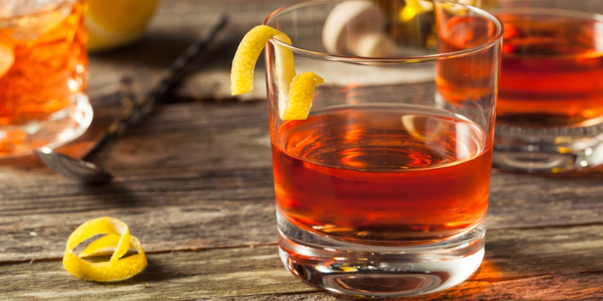

Cocktails in 2023
Posted on December 28, 2022.
This blog post will be a discussion of cocktails as well as a place where I update what I have been enjoying lately. A cocktail is a mixed drink with two or more ingredients in which at least one is alcoholic. They seem to be a near universal endeavor, which is a factor of cultures fermenting many thousands of years ago, whether by accident or intentionally. The first cocktail is often said to be the Sazerac, cognac and sugar over ice with some Peychaud’s Bitters and typically an absinthe rinse made by Aaron Bird in the late 1800s in New Orleans. The earliest alcoholic beverage may differ by sources but I found a record of a fermented rice, honey, and grape (or hawthorn fruit) beverage dated around 7000-6600 BCE.

intro paragraph goes here
welcome to 2023
Let’s get to the recipes.
The Technicolor Dreamcoat

This is a cocktail I had had at famed NYC bar Attaboy, from Milk and Honey’s Sam Ross and Michael McIlroy. A variation on The Famous Blue Raincoat deriving from Zac Pease at now defunct My Friend Duke in 2018, this cocktail is a tailored version of a Negroni. It stands out by including LoFi’s Gentian Amaro, a flavorful purple delight that helps to round out any boxy edges.
1 and 1/2 ounces Gin (Beefeater)
1/2 ounce LoFi Gentian Amaro
1/2 ounce Bruto Americano
1/2 ounce Dolin Blanc
Garnish with Orange or Grapefruit Peel
All ingredients ingredients are to be stirred over ice, strained into a double rocks glass over a big ice cube, and garnished with a peel of orange or grapefruit.
El Yucateco
This is a cocktail...
1 and 1/2 ounces Mezcal
1 and 1/2 ounces Pineapple Juice
1/2 ounce Habanero Syrup
1/2 ounce Lime Juice
Garnish with Lime Wheel
All ingredients are to be shaken over ice, strained into a coupe glass, and garnished with a lime wheel.
The Thumbs Up!
This is a cocktail...
1 ounce Gin
1/2 ounce Green Chartreuse
3/4 ounce Lime Juice
1/2 ounce Aperol
1/2 ounce Maraschino
Garnish with Lemon twist
All ingredients are to be shaken over ice, strained into a coupe glass, and garnished with a lemon wheel.
Grappino
This is a cocktail...
2/3 ounce Grappa
1/2 ounce Amaretto
1 ounce (or shot) espresso
Shake all over ice Top with soya cream OR whipped cream Grated nutmeg over top
Rosina Ferrario No 203
This is a cocktail...
1 and 1/2 ounces Nonnino Vigneti Moscato (white grappa)
1/2 ounce Maraschino
1/2 ounce Violette
1/2 ounce Lemon Juice
Garnish with edible Rose or Violet
Shake all over ice